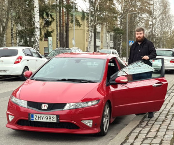

Autoni on Hondan vuonna 2009 valmistama FN2-korimallin Civic Type R. Se on perinteisen Civicin tehoversio, joka on tehty soveltumaan rata-ajoon tavallisen arjen lisäksi.

Eroavaisuuksia perusmalliin on muun muassa tehokkaampi moottori, jäykempi alusta, paremmat jarrut, kuppipenkit ja punaiseksi verhoillut sisätilat.
